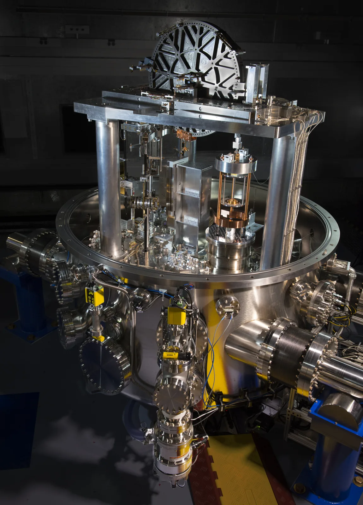

Quantities, units and the SI system
Why is the distance to the Voyager 2 probe sometimes given in kilometres, sometimes in astronomical units and sometimes in light-hours, even though it is one and the same distance?
Prior knowledge
- Sizes range from the Planck length to the observable universe over more than sixty powers of tenchapter Physics as a science and the scales of the universe
- Each step of a power of ten makes a length ten times greater or one tenth of what it waschapter Physics as a science and the scales of the universe
Think about it
NASA's Voyager 2 probe was launched in 1977, and it has crossed the heliopause, the edge of the bubble blown by the solar wind. It is now travelling in interstellar space, although it is still within the Sun's gravitational influence. We still keep in contact with it by radio signals. The distance of the probe is sometimes given in kilometres, sometimes in astronomical units and sometimes as the time a signal takes to travel from there to here.
Why is the same distance given in different units, and what must be done between the numbers so that they mean the same thing?
Optional Revise: powers of ten
Predict
Prediction 1: a signal to Voyager 2
More predictions 1 question
Prediction 2: a probe farther away
Investigate
Simulation
How to use
Scroll the picture by dragging, with the mouse wheel or with the arrow keys (Shift enlarges the step) or with the arrow buttons: the longer you hold a button, the faster the picture scrolls. The slider moves the view to a distance $d = 10^{n}\,\text{km}$ from the Sun, and the jump buttons take you straight to the Sun, a planet or Voyager 2. Travel at the speed of light sends a pulse of light from the centre of the view; Speed tells how many times faster than real time the time passes (1, 100 or 10 000 times), and the elapsed time and the distance travelled are shown in the numbers. Reset returns the view to the Sun. The field Voyager 2 day chooses the day for which the position of the probe is calculated; by default it is today. The distance of the centre of the view is read in three ways: in kilometres, in AU and as the travel time of light.
Assumptions of the model
The picture is to true scale in the direction of the distance: one pixel is the diameter of the Moon, $3474\,\text{km}$. The planets are drawn on one straight line starting from the Sun at their mean distances, that is the semi-major axes of their orbits (JPL, Approximate Positions of the Planets), and their sizes are equatorial diameters (NASA). In reality the planets are on different sides of the Sun. Voyager 2 is marked with an enlarged symbol, because the probe itself is much smaller than one pixel in the picture.
The distance, speed and signal travel time of Voyager 2 are values calculated by the model, not measurements (initial data: Burlaga et al. 2019, Nature Astronomy, and NASA/JPL). The model assumes that the probe moves at a constant speed of $15.341\,\text{km/s}$ starting from the crossing of the heliopause, the edge of the bubble of the solar wind, on 2018-11-05, when the distance from the Sun was $119.0\,\text{AU}$. The speed is the value at the crossing; the Sun's pull reduces it by only about $0.1\,\text{km/s}$ over 2018–2026. The signal travel time is calculated from the distance to the Sun. The Earth is at most about $1\,\text{AU}$ nearer to or farther from the Sun, so the signal travel time to the Earth differs from the one shown by at most about eight minutes. The speed of light is $c = 299\,792\,458\,\text{m/s}$, and Speed changes only the pace of the animation, not the elapsed time or the distance.
How the calculation works
The number of pixels is obtained by dividing the length by the diameter of the Moon:
$$N = \frac{d}{3474\,\text{km}}\cdot1\,\text{px}$$
For example, the width of the Sun is $\tfrac{1.392\cdot10^{6}\,\text{km}}{3474\,\text{km}}\cdot1\,\text{px} = 401\,\text{px}$. The distance in AU is $\tfrac{d}{1.496\cdot10^{8}\,\text{km}}$, and the travel time of light is
$$t = \frac{d}{c}\qquad c = 2.998\cdot10^{5}\,\text{km/s}$$
When travelling, the distance travelled is $s = ct$ and the elapsed time $t = s : c$; the speed setting only tells how many seconds of the light's travel time pass in one second of viewing. The distance of Voyager 2 on day $t$ in the model is
$$d = d_0 + v\,(t - t_0)$$
where $d_0 = 119.0\,\text{AU}$, $v = 15.341\,\text{km/s}$ and $t_0$ is 2018-11-05. The formula is used here as a ready-made model, and you do not need to solve it yourself.
Scroll through the Solar System, where the diameter of the Moon is one pixel. Jump to an object, travel at the speed of light and read the distance in kilometres, in AU and as the travel time of light.
Experiment 1: the power of ten of the distance
Test prediction 2. Drag the slider for the distance $d = 10^{n}\,\text{km}$ and record the distance in AU and the light travel time in seconds for $n = 7$, $n = 8$ and $n = 9$. Move the slider so that the slider title reads exactly $n = 8.00$ (and so on), and then press Record measurement. Look at what happens to the numbers in the table when $n$ increases by one.
- Initial state
- power of ten of the distance $n$ = $7$
- Kept constant
- Voyager 2 day
- Varied
- power of ten of the distance $n$
| power of ten of the distance $n$ | $d$ $(\text{AU})$ | $t$ $(\text{s})$ |
|---|
More to investigate 3 tasks
The initial data and values of the Voyager 2 model
The simulation calculates the position of Voyager 2 by assuming that after crossing the heliopause the probe moves at a constant speed. The heliopause is the boundary beyond which the stream of particles from the Sun, the solar wind, no longer dominates space. The distances and signal travel times from the Sun calculated this way (calculated for four days, not measurements):
| Year | $d$ (AU) | $d$ (km) | $t$ (h) |
|---|---|---|---|
| 2018 | $119.0$ | $1.78\cdot10^{10}$ | $16.5$ |
| 2022 | $131.9$ | $1.97\cdot10^{10}$ | $18.3$ |
| 2026 | $144.9$ | $2.17\cdot10^{10}$ | $20.1$ |
| 2030 | $157.8$ | $2.36\cdot10^{10}$ | $21.9$ |
The values are for 5 November of each year. The same distance is written in three ways: in AU, in kilometres and as the travel time of light in hours.
Experiment 2: Voyager 2 on different days
Test prediction 1. Press the Voyager 2 jump button so that the centre of the view is at the probe. Record the distance of the probe in AU and the signal travel time in hours for the date 2026-01-01 and then for at least one other date, for example 2030-01-01. Change the date in the Voyager 2 day field. The values are calculated by the model.
- Initial state
- date = 2026-01-01
- Kept constant
- nothing
- Varied
- date
| date | $d$ $(\text{AU})$ | $t$ $(\text{h})$ |
|---|
Conclusion: distance, unit and travel time of light
Write, based on your tables: how does the travel time of light depend on the distance? How many times longer is the signal travel time to Voyager 2 than the travel time of one AU, and why can a distance be given in three different units?
Model answer
In Experiment 1 every increase of $n$ by one made both the distance in AU and the travel time of light ten times greater: $n = 7$ gave $33.4\,\text{s}$, $n = 8$ gave $334\,\text{s}$ and $n = 9$ gave $3340\,\text{s}$. The speed of light is constant, so the time is directly proportional to the distance, $t = s : c$. In Experiment 2 the value of the model for 1 January 2026 was $142.2\,\text{AU}$ and the travel time $19.7\,\text{h}$, which is about 142 times the travel time of one AU, $8.32\,\text{min}$. Later the travel time is longer, because the probe is moving away. The same distance can be written in kilometres, in AU or as the travel time of light: the numbers are different because the units are different, but they describe the same distance: in place of a unit one can always write its value in another unit. The values are calculated by the model from published initial data, and the travel time of the signal to the Earth may differ from them by at most about eight minutes.
Assess your own answer
Tick the points your own answer already contains.
Theory
Key idea
Quantity, numerical value and unit
Physics describes the world with measurable properties called quantities: length, mass, time and speed are quantities. The value of a quantity is measured by comparing it with an agreed measure, a unit, and the value is written as the product of a numerical value and a unit, for example the length of a pencil $l = 12.0\,\text{cm}$. A numerical value without a unit tells you nothing: the number 12 could mean centimetres, hours or kilograms. The symbol of a quantity is written in italics ($l$, $m$, $t$) and the unit in upright letters ($\text{m}$, $\text{kg}$, $\text{s}$).
The SI system
So that a metre is the same metre everywhere in the world, the scientific community has agreed on a common system of units, the SI system. It has seven base quantities, and each has its own base unit. All other quantities are derived from them: speed is length divided by time, so its unit is $\text{m/s}$, and the unit of area is $\text{m}^2$.
| Base quantity | Symbol | SI unit |
|---|---|---|
| length | $l$ | metre $\text{m}$ |
| mass | $m$ | kilogram $\text{kg}$ |
| time | $t$ | second $\text{s}$ |
| electric current | $I$ | ampere $\text{A}$ |
| temperature | $T$ | kelvin $\text{K}$ |
| amount of substance | $n$ | mole $\text{mol}$ |
| luminous intensity | $I_\text{v}$ | candela $\text{cd}$ |
In this course you need the first three most. You will meet the other base quantities in later courses.

Prefixes and powers of ten
The metre is good for measuring a room but not an atom or Neptune. That is why a prefix, an abbreviation for a power of ten, is attached in front of the unit: $1\,\text{km} = 10^{3}\,\text{m}$ and $1\,\text{mm} = 10^{-3}\,\text{m}$. The most common prefixes go up in steps of a factor of a thousand (exceptions are, for example, centi $10^{-2}$ and deci $10^{-1}$), and large and small numbers are written in scientific notation $a\cdot10^{n}$, where $1 \le a < 10$ and $n$ is an integer. For example, the distance between the Earth and the Sun is $1.5\cdot10^{11}\,\text{m} = 1.5\cdot10^{8}\,\text{km}$.
When you move to a smaller unit, the numerical value grows: $4.2\,\text{km} = 4.2\cdot10^{3}\,\text{m} = 4200\,\text{m}$. When you move to a larger unit, the numerical value gets smaller. The quantity stays the same, only the way of writing it changes.
A unit for every scale
A unit is chosen so that the numerical value is easy to read. In the chapter Physics as a science and the scales of the universe you saw that the structures of matter and of the universe lie on steps of powers of ten. Each step has a convenient unit:
| Structure | Size or distance | Unit | Value of the unit |
|---|---|---|---|
| Atomic nucleus | about $10^{-15}\,\text{m}$ | femtometre | $1\,\text{fm} = 10^{-15}\,\text{m}$ |
| Atom | about $10^{-10}\,\text{m}$ | nanometre | $1\,\text{nm} = 10^{-9}\,\text{m}$ |
| Red blood cell | about $10^{-5}\,\text{m}$ | micrometre | $1\,\mu\text{m} = 10^{-6}\,\text{m}$ |
| Earth | about $10^{7}\,\text{m}$ | kilometre | $1\,\text{km} = 10^{3}\,\text{m}$ |
| Orbits of the planets | about $10^{12}\,\text{m}$ | astronomical unit | $1\,\text{AU} \approx 1.5\cdot10^{11}\,\text{m}$ |
| Distances between stars | about $10^{16}\,\text{m}$ and more | light-year | about $9.46\cdot10^{15}\,\text{m}$ |
For example, the diameter of a hydrogen atom is $0.11\,\text{nm}$ and that of a proton $1.7\,\text{fm}$. A unit does not change the size, only the way of writing it. The astronomical unit and the light-year are not SI units, but they are defined in metres, so you can always convert them to metres.
Significant figures
The significant figures of a numerical value tell how precisely the quantity is known. Starting from the first digit that is not zero, all digits, including the trailing zeros of a decimal number, are significant: $0.0250\,\text{m}$ has three significant figures and $3.0\,\text{m}$ has two. Scientific notation makes the precision visible: $3.00\cdot10^{8}$ has three significant figures and $3\cdot10^{8}$ has one. The trailing zeros of a whole number are unclear: from the Moon's mean distance $384\,400\,\text{km}$ you cannot see whether the precision is a hundred, ten or one kilometre. Show the precision in scientific notation, for example $3.844\cdot10^{5}\,\text{km}$ (four significant figures). In the tasks of this book a value given as a whole number ending in zeros, such as $10\,\text{min}$, is exact unless stated otherwise.
The result of a multiplication or division is given with as many significant figures as the least precise factor has. Rounding is done only at the end, and exact numbers such as the conversion factor $1000$ have no limiting effect. For example, $1.85\,\text{m}\cdot0.92\,\text{m} = 1.702\,\text{m}^2$ is rounded to $1.7\,\text{m}^2$.
Unit conversions
When you change a unit, the quantity does not change, only the way of writing it. A conversion is done by replacing the old unit with its value in the new unit. Since $1\,\text{km} = 1000\,\text{m}$, you can write $1000\,\text{m}$ in place of the kilometre:
$$4.2\,\text{km} = 4.2\cdot1000\,\text{m} = 4200\,\text{m}$$
In the other direction $1\,\text{m} = 0.001\,\text{km}$, so $350\,\text{m} = 350\cdot0.001\,\text{km} = 0.35\,\text{km}$. Always check the result by reasoning: in a smaller unit the numerical value is greater, because more of the small units are needed. For area, the unit is a product of two lengths, so $$\begin{aligned} 1\,\text{km}^2 &= 1000\,\text{m}\cdot1000\,\text{m} \\ &= 10^{6}\,\text{m}^2\text{.} \end{aligned}$$
In astronomy the kilometre is too small a unit. The astronomical unit $\text{AU}$ is an agreed unit of length that is close to the mean distance between the Earth and the Sun: $$\begin{aligned} 1\,\text{AU} &= 149\,597\,870.7\,\text{km} \\ &\approx 1.496\cdot10^{8}\,\text{km}\text{.} \end{aligned}$$ The light-year is also a unit of length, not of time: it is the distance light travels in a vacuum in a year, about $9.46\cdot10^{12}\,\text{km}$.
A distance can also be given as the time light needs to travel it. Light travels in a vacuum at a constant speed $c$, so the distance it covers is speed times time, $s = ct$. The travel time is obtained by solving this formula for time:
$$t = \frac{s}{c}$$
where $t$ is the travel time of light, $s$ the distance travelled by light and $$\begin{aligned} c &= 299\,792\,458\,\text{m/s} \\ &\approx 2.998\cdot10^{5}\,\text{km/s} \end{aligned}$$ the speed of light in a vacuum. Light travels one AU in $\tfrac{1.496\cdot10^{8}\,\text{km}}{2.998\cdot10^{5}\,\text{km/s}} = 499\,\text{s}$, which is $8.32\,\text{min}$.
Common misconception
The numerical value and the unit belong together. When the unit changes, the numerical value changes inversely: a larger unit means a smaller numerical value, and the quantity itself stays the same.
Square units are easy to forget. One square kilometre is not a thousand but a million square metres, because $(10^{3})^2 = 10^{6}$.
The light-year is not a unit of time, even though the name contains the word year. It is a unit of length, about $9.46\cdot10^{12}\,\text{km}$.
Summary
- The value of a quantity is a numerical value times a unit: $l = 12.0\,\text{cm}$. Without a unit the number tells you nothing.
- In the SI system the base units are, for example, the metre, the kilogram and the second, and the other units are derived from them.
- A prefix is a power of ten: kilo $10^{3}$, mega $10^{6}$, giga $10^{9}$, milli $10^{-3}$, micro $10^{-6}$.
- In a unit conversion, the old unit is replaced by its value in the new unit, for example $4.2\,\text{km} = 4.2\cdot1000\,\text{m}$. For a square unit the conversion is done twice: $1\,\text{km}^2 = 10^{6}\,\text{m}^2$.
- The result of a multiplication or division is given with as many significant figures as the least precise factor has.
- The travel time of light is $t = \tfrac{s}{c}$. Light travels one AU in about $8.3\,\text{min}$.
Optional Return to your predictions
Compare your predictions with the values of the model in the experiments and with the unit conversions. Then return to the question at the beginning: why can the same distance be given in kilometres, in astronomical units and as the travel time of light, and when is each unit useful?
Would you change your prediction?
Examples
Example 1: Light from the Sun to Neptune
Neptune's mean distance from the Sun is $30.1\,\text{AU}$. How many kilometres is that in scientific notation, and how many hours does light take to travel from the Sun to Neptune? Use the values $1\,\text{AU} = 1.496\cdot10^{8}\,\text{km}$ and $c = 2.998\cdot10^{5}\,\text{km/s}$.
Step 1/7
Given and unknown.
- The distance is $s = 30.1\,\text{AU}$,
- $1\,\text{AU} = 1.496\cdot10^{8}\,\text{km}$ and
- the speed of light is $c = 2.998\cdot10^{5}\,\text{km/s}$.
We want the distance $s$ in kilometres and the travel time $t$ in hours.
Step 2/7
Principle. The distance does not change when the unit changes, so in place of AU we write its value in kilometres. Light travels at a constant speed $c$, so the given formula $s = ct$ gives the travel time.
Step 3/7
Rearranged formula. $$t = \frac{s}{c}$$
Step 4/7
Unit conversions. The distance is converted to kilometres by writing $1.496\cdot10^{8}\,\text{km}$ in place of $\text{AU}$: $$\begin{aligned} s &= 30.1\,\text{AU} \\ &= 30.1\cdot1.496\cdot10^{8}\,\text{km} \\ &= 4.503\cdot10^{9}\,\text{km}\text{.} \end{aligned}$$$$\begin{aligned} &s \\ &= 30.1\,\text{AU} \\ &= 30.1\cdot1.496\cdot10^{8}\,\text{km} \\ &= 4.503\cdot10^{9}\,\text{km}\text{.} \end{aligned}$$ The travel time comes out in seconds, because $\text{km}$ cancels. The time is asked in hours, so the seconds are converted to hours: $1\,\text{h} = 3600\,\text{s}$.
Step 5/7
Substitution. $$\begin{aligned} t &= \frac{s}{c} \\ &= \frac{4.503\cdot10^{9}\,\text{km}}{2.998\cdot10^{5}\,\text{km/s}} \\ &= 1.502\cdot10^{4}\,\text{s} \\ &= (1.502\cdot10^{4} : 3600)\,\text{h} = 4.17\,\text{h} \end{aligned}$$
Step 6/7
Result. The distance is $4.50\cdot10^{9}\,\text{km}$ and the travel time of light is $4.17\,\text{h}$, to three significant figures like the initial value $30.1\,\text{AU}$.
Step 7/7
Reasonableness. Light travels one AU in $8.3\,\text{min}$, so $30\,\text{AU}$ takes light about
This agrees with the result, and the distance is of the order of billions of kilometres, as suits an outer planet.
Optional Example 2: Find the error
Optional Example 3: How many digits do you write?
Example 4: Apply to a new situation
Voyager 2 is moving away from the Sun at a speed of $15.341\,\text{km/s}$.
How many astronomical units does it move away in a year? Use the values $1\,\text{a} = 3.156\cdot10^{7}\,\text{s}$ and $1\,\text{AU} = 1.496\cdot10^{8}\,\text{km}$. Answer in the unit AU/a.
Hint 1: a guiding question
Speed tells the distance per second. How many seconds are there in a year, and what is the unit of the distance when the speed is in $\text{km/s}$?
Hint 2: what is the connection
The distance in a year is $s = vt$, where $t = 3.156\cdot10^{7}\,\text{s}$. Then calculate how many AU fit in the distance, when $1\,\text{AU} = 1.496\cdot10^{8}\,\text{km}$.
Hint 3: an intermediate step
The number of AU is $$\begin{aligned} &4.842\cdot10^{8}\,\text{km} : 1.496\cdot10^{8}\,\text{km}\text{.} \end{aligned}$$$$\begin{aligned} &4.842\cdot10^{8}\,\text{km} \\ &: 1.496\cdot10^{8}\,\text{km}\text{.} \end{aligned}$$
Show the solution
Given
speed $v = 15.341\,\text{km/s}$, time $t = 1\,\text{a} = 3.156\cdot10^{7}\,\text{s}$, $1\,\text{AU} = 1.496\cdot10^{8}\,\text{km}$
Find
the distance $s$ travelled in a year in astronomical units, that is the speed of recession in the unit $\text{AU/a}$
Principle
By assumption the probe moves at a constant speed, so the given formula $s = vt$ gives the distance travelled in a year in kilometres. It is finally converted to astronomical units.
Formula
$s = vt$
Conversions
The time is already in seconds, so $\text{s}$ cancels. Finally we calculate how many AU fit in the distance: $1\,\text{AU} = 1.496\cdot10^{8}\,\text{km}$.
Substitution
The number of AU is $$\begin{aligned} 4.842\cdot10^{8}\,\text{km} : 1.496\cdot10^{8}\,\text{km} &= 3.236\text{,} \end{aligned}$$$$\begin{aligned} &4.842\cdot10^{8}\,\text{km} \\ &: 1.496\cdot10^{8}\,\text{km} \\ &= 3.236\text{,} \end{aligned}$$ so $s = 3.236\,\text{AU}$ in a year
Answer
The probe recedes by $3.236\,\text{AU}$ a year, that is $3.236\,\text{AU/a}$, four significant figures, because the length of the year $3.156\cdot10^{7}\,\text{s}$ and the AU $1.496\cdot10^{8}\,\text{km}$ are given to four.
Reasonableness
A year has about $3\cdot10^{7}$ seconds and the speed is about $15\,\text{km/s}$, so the distance is about $4.5\cdot10^{8}\,\text{km}$. That is about three AU, and in the table of the model the distance grew in four years by about $13\,\text{AU}$, that is about $3.2\,\text{AU}$ a year.
Review the chapter's concepts
Cards you mark Review later collect in your review deck.
- Significant figures
- The digits of a number that show the precision available in a measurement result.
- SI system
- The internationally agreed system of units, in which all other units are formed from seven base units.
- Base quantity
- One of the seven measurable properties chosen as a basis, such as length, mass or time.
- Base unit
- The unit agreed for a base quantity, such as the metre, the kilogram or the second.
- Derived unit
- A combination of base units, such as $\text{m/s}$ for velocity or $\text{N}$ for force.
- Multiple of a unit
- A practical unit for very large or small values, formed with a prefix.
- Prefix
- A symbol placed in front of a unit that gives a power-of-ten factor, such as kilo $10^{3}$ or milli $10^{-3}$.
- Power of ten
- A number of the form $10^{n}$, which makes very large and very small numbers easy to write and compare.
- Order of magnitude
- The order of magnitude of a value is the power of ten nearest to it on the power-of-ten axis; for example $8.8\cdot10^{3}\,\text{m}$ is of the order of $10^{4}\,\text{m}$.
Exercises
- Exercise 2-1CoreBasic
The thickness of a human hair is $82\,\mu\text{m}$. Give the thickness in millimetres.
Answer
$0.082\,\text{mm}$
Show the solution
Given
thickness of a hair $l = 82\,\mu\text{m}$
Find
the thickness $l$ in millimetres
Principle
A quantity does not change when its unit is changed; only the numerical value changes. The prefix micro means a factor of $10^{-6}$ and the prefix milli a factor of $10^{-3}$, so $1\,\mu\text{m} = 10^{-3}\,\text{mm}$.
Formula
$1\,\mu\text{m} = 10^{-3}\,\text{mm}$
Conversions
In place of the micrometre we write its value in millimetres, $10^{-3}\,\text{mm}$.
Substitution
$l$$= 82\,\mu\text{m}$$= 82\cdot 10^{-3}\,\text{mm}$$= 0.082\,\text{mm}$Answer
$0.082\,\text{mm}$
Two significant figures like the initial value $82\,\mu\text{m}$ (the leading zero is not significant).
Reasonableness
A millimetre is a thousand times larger unit than a micrometre, so the numerical value must become a thousand times smaller: from 82 to 0.082. A hair is slightly less than a tenth of a millimetre thick, which fits experience.
- Exercise 2-3CoreBasic
The length of a table is $1.85\,\text{m}$ and its width $0.92\,\text{m}$. Calculate the area of the table to as many significant figures as the measurement results justify.
Answer
$1.7\,\text{m}^2$
Show the solution
Given
length $l = 1.85\,\text{m}$ (three significant figures), width $w = 0.92\,\text{m}$ (two significant figures)
Find
the area $A$ in square metres
Principle
The area of a rectangle is the product of its sides. The number of significant figures in a product is the same as in the least precise factor: the result cannot be given more precisely than the measurement result with the lowest precision.
Formula
$A = l\,w$
Conversions
Not needed: both sides are already in metres, so the area comes out in the unit $\text{m}\cdot\text{m} = \text{m}^2$.
Substitution
$A$$= 1.85\,\text{m}\cdot 0.92\,\text{m}$$= 1.702\,\text{m}^2$Answer
$1.7\,\text{m}^2$
Two significant figures, because the width $0.92\,\text{m}$ is the least precise piece of data.
Reasonableness
With rounded numbers $2\,\text{m}\cdot 1\,\text{m} = 2\,\text{m}^2$, and the result 1.7 is slightly smaller, because both sides were rounded upwards. The square metre is a unit of area, as it should be.
- Exercise 2-11CoreApplied
The clock frequency of a computer processor is $3.2\,\text{GHz}$, that is 3.2 billion cycles per second. Use the values $1\,\text{GHz} = 10^{9}\,\text{Hz}$ and $1\,\text{Hz} = 1/\text{s}$.
How many clock cycles can the processor perform in $5.0\,\text{ms}$?
Answer
$16\,000\,000$
Show the solution
Given
clock frequency $f = 3.2\,\text{GHz}$, time $t = 5.0\,\text{ms}$; $1\,\text{GHz} = 10^{9}\,\text{Hz}$ and $1\,\text{Hz} = 1/\text{s}$
Find
the number of clock cycles $N$
Principle
The frequency tells how many cycles occur in a second. When the frequency is constant, the number of cycles is the product of the frequency and the time. The frequency and the time must be given in the same unit of time, so both are converted to SI units.
Formula
$N = f\,t$
Conversions
$f$$= 3.2\,\text{GHz}$$= 3.2\cdot10^{9}\,\text{Hz}$$= 3.2\cdot10^{9}\,\text{1/s}$$t$$= 5.0\,\text{ms}$$= 5.0\cdot10^{-3}\,\text{s}$Substitution
$N$$= 3.2\cdot10^{9}\,\dfrac{1}{\text{s}}\cdot 5.0\cdot10^{-3}\,\text{s}$$= 16\cdot10^{6}$$= 1.6\cdot10^{7}$Answer
$16\,000\,000$
That is $1.6\cdot10^{7}$ cycles, two significant figures like the initial values $3.2\,\text{GHz}$ and $5.0\,\text{ms}$.
Reasonableness
Three gigahertz is about three billion cycles per second. A millisecond is a thousandth of a second, so in one millisecond there are about three million cycles, and in five about $5\cdot 3 = 15$ million. The result $16$ million agrees with the estimate.
- Exercise 2-17CoreApplied
A tap fills a bucket at a steady flow rate $q = 0.20\,\textsf{l}/\text{s}$. A student calculates how long it takes to fill a $12\,\textsf{l}$ bucket.
The student's solution is: “The time is the product of the flow rate and the volume, $t = qV = 0.20\,\textsf{l}/\text{s}\cdot12\,\textsf{l} = 2.4$.” The student concludes that the bucket fills in $2.4$ seconds.
Check the units of the student's calculation and explain what a unit check reveals about the error. Then calculate the correct time in minutes.
Answer
$1.0\,\text{min}$
Show the solution
Given
flow rate $q = 0.20\,\textsf{l}/\text{s}$ and volume of the bucket $V = 12\,\textsf{l}$; the student's result $t = qV = 2.4$ seconds
Find
the student's error and the correct filling time $t$ in minutes
Principle
When calculating time, the unit of the result must be a unit of time. The flow rate tells how many litres come per second, so the formula must be $V = qt$.
Formula
$V = qt$, from which $t = \dfrac{V}{q}$
Conversions
The unit is checked by substitution: in the student's formula $\textsf{l}/\text{s}\cdot\textsf{l} = \textsf{l}^2/\text{s}$, which is not a unit of time, so the formula is wrong. At the end the seconds are converted to minutes: $1\,\text{min} = 60\,\text{s}$.
Substitution
$t$$= \dfrac{12\,\textsf{l}}{0.20\,\textsf{l}/\text{s}}$$= 60\,\text{s}$$= \dfrac{60}{60}\,\text{min}$$= 1.0\,\text{min}$Answer
$1.0\,\text{min}$
Two significant figures like the flow rate $0.20\,\textsf{l}/\text{s}$ and the volume $12\,\textsf{l}$. The student's $2.4$ is not seconds but in the unit $\textsf{l}^2/\text{s}$.
Reasonableness
A fifth of a litre flows in every second, so a litre fills in five seconds and $12\,\textsf{l}$ takes twelve times as long, $60\,\text{s}$. The filling time is thus of the order of a minute, as you know from filling a bucket.
Level 1 · basic practice 8 exercises
- Exercise 2-2
The distance of the Moon from the Earth is on average $384\,400\,\text{km}$. Give the distance in megametres, when $1\,\text{Mm} = 10^{6}\,\text{m}$.
Answer
$384.4\,\text{Mm}$
Show the solution
Given
distance between the Earth and the Moon $s = 384\,400\,\text{km}$; $1\,\text{Mm} = 10^{6}\,\text{m}$
Find
the distance $s$ in megametres
Principle
The distance is the same regardless of the unit. The prefix mega is $10^{6}$ and the prefix kilo $10^{3}$, so $1\,\text{Mm} = 10^{3}\,\text{km}$.
Formula
$1\,\text{km} = 10^{-3}\,\text{Mm}$
Conversions
A megametre is a thousand kilometres, so a kilometre is a thousandth of a megametre. In place of the kilometre we write $10^{-3}\,\text{Mm}$.
Substitution
$s$$= 384\,400\,\text{km}$$= 384\,400\cdot 10^{-3}\,\text{Mm}$$= 384.4\,\text{Mm}$Answer
$384.4\,\text{Mm}$
In the tasks of this book the value $384\,400\,\text{km}$, given as a whole number ending in zeros, is exact, and $1\,\text{km} = 10^{-3}\,\text{Mm}$ is exact, so the numerical value is only divided by a thousand and the result is not rounded.
Reasonableness
A megametre is a thousand kilometres, and $384\,400\,\text{km}$ is about $400\,000\,\text{km}$, so the result is about $400\,\text{Mm}$. The distance lies between the powers of ten $10^{8}\,\text{m} = 100\,\text{Mm}$ and $10^{9}\,\text{m} = 1000\,\text{Mm}$, as it should.
- Exercise 2-4
In the picture an aluminium rod is next to a ruler. How long is the rod? Give the length in millimetres.
Answer
$116\,\text{mm}$
Show the solution
Given
a picture in which an aluminium rod is next to a ruler and the ends of the rod are at the scale of the ruler
Find
the length $l$ of the rod in millimetres
Principle
The rod does not start at the zero mark of the ruler, so the length is not the reading at the right end but the difference between the readings at the two ends. A quantity does not change when the unit is changed, so in place of the centimetre we write its value in millimetres.
Reading the figure
The left end is at $x_1 = 2.0\,\text{cm}$ (two long marks from zero). The right end is at $x_2 = 13.6\,\text{cm}$ (thirteen long marks and six millimetre marks after that). Both ends fall on a millimetre mark, so the readings are taken to the nearest millimetre.
Formula
$l = x_2 - x_1$
Conversions
One centimetre is ten millimetres, so in place of the centimetre we write $10\,\text{mm}$.
Substitution
$l$$= 13.6\,\text{cm} - 2.0\,\text{cm}$$= 11.6\,\text{cm}$$= 11.6\cdot10\,\text{mm}$$= 116\,\text{mm}$Answer
$116\,\text{mm}$
Three significant figures, because both readings were taken to the nearest millimetre and so their difference is also known to the nearest millimetre.
Reasonableness
A millimetre is a smaller unit than a centimetre, so the numerical value must become ten times larger: from 11.6 to 116. The rod is about ten centimetres long, as can be seen in the picture.
- Exercise 2-5
The diameter of the Moon is $3474\,\text{km}$, and it is drawn in a picture as one pixel wide. A circle corresponding to the Sun is drawn to the same scale. The diameter of the Sun is $1.392\cdot10^{6}\,\text{km}$.
How many pixels wide is the Sun?
Answer
$400.7\,\text{px}$
Show the solution
Given
the diameter of the Moon $D_\text{Moon} = 3474\,\text{km}$ corresponds to one pixel; the diameter of the Sun $D_\text{Sun} = 1.392\cdot10^{6}\,\text{km}$
Find
the width of the Sun in pixels $N$
Principle
The picture is drawn to scale, so all lengths shrink in the same ratio. The number of pixels is the ratio of the length to the diameter of the Moon.
Formula
$N$$= \dfrac{D_\text{Sun}}{D_\text{Moon}}\cdot 1\,\text{px}$Conversions
Not needed: both diameters are in kilometres and the units cancel.
Substitution
$N$$= \dfrac{1.392\cdot10^{6}\,\text{km}}{3474\,\text{km}}\cdot 1\,\text{px}$$= 400.69\,\text{px}$Answer
$400.7\,\text{px}$
Four significant figures like the initial values $1.392\cdot10^{6}\,\text{km}$ and $3474\,\text{km}$.
Reasonableness
Roughly
$\dfrac{1.4\cdot10^{6}}{3.5\cdot10^{3}}$$= 0.4\cdot10^{3}$$= 400$The diameter of the Sun is about 400 Moon diameters, which fits the fact that it is much larger than the Moon.
- Exercise 2-6
Which of the following units is a base unit of the SI system?
Answer
Kilogram ($\text{kg}$), used to measure mass.
Show the solution
Find
which of the given units is a base unit of the SI system.
Principle
The SI system has seven base units: metre, kilogram, second, ampere, kelvin, mole and candela. The base units are agreed in the SI system, and other units are derived from them as products and quotients, for example $1\,\text{N} = 1\,\text{kg}\cdot\text{m/s}^2$. A prefix does not make a new unit but forms a part or a multiple of a unit.
Model answer
The kilogram is the SI base unit of mass. The newton is the unit of force, and it is derived from base units as a product and a quotient, $\text{kg}\cdot\text{m/s}^2$, so it is a derived unit.
The gram is a thousandth of a kilogram, $1\,\text{g} = 10^{-3}\,\text{kg}$, that is, a decimal part of the kilogram and not a base unit; the prefixes are attached to the gram, so a kilogram is a thousand grams.
The litre is not an SI unit, and the SI unit of volume, $\text{m}^3$, is derived from the metre: $\text{m}\cdot\text{m}\cdot\text{m}$.
- Exercise 2-7
A cyclist's speed is $18\,\text{km/h}$. Give the speed in the unit $\text{m/s}$.
Answer
$5.0\,\text{m/s}$
Show the solution
Given
speed $v = 18\,\text{km/h}$
Find
the speed $v$ in the unit $\text{m/s}$
Principle
A quantity does not change when the unit is changed; only the numerical value changes. The unit of speed is length divided by time, so both the kilometre and the hour are replaced by their values in SI units.
Formula
speed is distance divided by time, $v = \dfrac{s}{t}$, so the unit is a unit of length divided by a unit of time
Conversions
In place of the kilometre we write $1000\,\text{m}$ and in place of the hour $3600\,\text{s}$, because $1\,\text{km} = 1000\,\text{m}$ and $1\,\text{h} = 3600\,\text{s}$.
Substitution
$v$$= 18\,\text{km/h}$$= 18\cdot\dfrac{1000\,\text{m}}{3600\,\text{s}}$$= 5.0\,\text{m/s}$Answer
$5.0\,\text{m/s}$
Two significant figures like the initial value $18\,\text{km/h}$.
Reasonableness
A second is a much shorter time than an hour, and a kilometre is a much longer distance than a metre. The cyclist travels $18\,\text{km}$ in an hour, that is a few metres in a second, and $5.0\,\text{m}$ per second fits ordinary cycling.
- Exercise 2-8
Density is calculated with the formula $\rho = \dfrac{m}{V}$, where $m$ is the mass and $V$ the volume.
What is the unit of density when the mass is in kilograms and the volume in cubic metres?
Answer
$\text{kg/m}^3$, because mass is divided by volume
Show the solution
Find
the unit of density when the mass is in kilograms and the volume in cubic metres.
Principle
In the formula $\rho = \dfrac{m}{V}$ the mass is divided by the volume. Units are treated like quantities: the unit of a quantity is obtained by substituting the units of the quantities into the formula. The unit of volume is a product of three lengths, $\text{m}\cdot\text{m}\cdot\text{m} = \text{m}^3$.
Model answer
Substitute the units into the formula: $\dfrac{\text{kg}}{\text{m}^3}$, so the unit of density is $\text{kg/m}^3$. The kilogram is in the numerator because the mass is in the numerator of the formula.
The product $\text{kg}\cdot\text{m}^3$ does not come from a division, the inverse $\text{m}^3/\text{kg}$ would describe volume per unit of mass, and the square metre is a unit of area. A unit check can therefore be used to verify that a formula has been written correctly.
- Exercise 2-9
The distance $s$ is measured in kilometres and the time $t$ in hours. Which of the following expressions can be a speed?
Answer
$\dfrac{12\,\text{km}}{3.0\,\text{h}}$
Show the solution
Find
which of the given expressions can be a speed.
Principle
A speed tells how long a distance is covered in a unit of time, so its unit is a unit of length divided by a unit of time. The unit of an expression is obtained by substituting the units into the expression in the same way as for quantities: units are multiplied and divided like numerical values.
Model answer
The expression $\dfrac{12\,\text{km}}{3.0\,\text{h}}$ is a distance divided by a time, and its unit is $\text{km/h}$, so it can be a speed.
The unit of the product is $\text{km}\cdot\text{h}$, so it is not a length divided by a time. The unit of the inverse expression is $\text{h/km}$, that is time per distance, so it is not a speed either.
A squared time in the denominator gives the unit $\text{km/h}^2$, which is a unit of the acceleration type. The answer is therefore found from the units alone, and no numerical values need to be calculated.
- Exercise 2-10
A device on the surface of the Moon sends a radio signal to the Earth. The signal travels at the speed of light, $c = 2.998\cdot10^{8}\,\text{m/s}$. Look up the mean distance of the Moon from the Earth in the MAFY table (mafytaulukot.fi). The travel time is $t = \tfrac{s}{c}$, and the distance is converted to metres first. Calculate how long the signal takes to travel that distance.
Hint
The value is in the MAFY table Aurinkokunta (the Solar System).
Answer
$t \approx 1.28\,\text{s}$
Show the solution
Given
from the table (MAFY table, Aurinkokunta) the mean distance of the Moon from the Earth $s = 384\,400\,\text{km}$; the speed of light $c = 2.998\cdot10^{8}\,\text{m/s}$
Asked
the travel time $t$ of the signal in $\text{s}$
Principle
A radio signal travels in vacuum at the constant speed $c$, so the travel time is the distance divided by the speed.
Formula
$t = \dfrac{s}{c}$
Conversions
The speed is in $\text{m/s}$, so the distance is converted to metres:
$s$$= 384\,400\,\text{km}$$= 384\,400\cdot10^{3}\,\text{m}$$= 3.844\cdot10^{8}\,\text{m}$Substitution
$t$$= \dfrac{3.844\cdot10^{8}\,\text{m}}{2.998\cdot10^{8}\,\text{m/s}}$$= 1.282\,\text{s}$$\approx 1.28\,\text{s}$Answer
$t \approx 1.28\,\text{s}$
To three significant figures. The Moon's distance in the MAFY table (Aurinkokunta) is a mean value, centre to centre, and the signal path is not exactly that, so three significant figures are enough. An answer within about $\pm 4\,\%$ is accepted.
Reasonableness
Light travels about $3\cdot10^{8}\,\text{m}$ in a second and the distance to the Moon is about $4\cdot10^{8}\,\text{m}$, so the travel time is a little over a second. The result agrees.
Level 2 · applied practice 6 exercises
- Exercise 2-12
The length of a bacterium is $2.0\,\mu\text{m}$. How many such bacteria fit one after another along a distance of $1.0\,\text{mm}$?
Answer
$500$
Show the solution
Given
length of a bacterium $l = 2.0\,\mu\text{m}$, distance $L = 1.0\,\text{mm}$
Find
the number of bacteria $N$
Principle
The number is the ratio of the distance to the length of one bacterium. The ratio is meaningful only when both lengths are in the same unit, so one of them is converted.
Formula
$N = \dfrac{L}{l}$
Conversions
$L$$= 1.0\,\text{mm}$$= 1.0\cdot10^{-3}\,\text{m}$$l$$= 2.0\,\mu\text{m}$$= 2.0\cdot10^{-6}\,\text{m}$Substitution
$N$$= \dfrac{1.0\cdot10^{-3}\,\text{m}}{2.0\cdot10^{-6}\,\text{m}}$$= 0.50\cdot10^{3}$$= 5.0\cdot10^{2}$$= 500$Answer
$500$
Bacteria, two significant figures like the initial values $1.0\,\text{mm}$ and $2.0\,\mu\text{m}$.
Reasonableness
A millimetre is a thousand micrometres, so 1000 objects one micrometre long would fit in $1\,\text{mm}$. A bacterium is two micrometres long, so half as many fit, 500.
- Exercise 2-13
The area of a field is $2.4\,\text{km}^2$. Give the area in hectares, when $1\,\text{ha} = 10\,000\,\text{m}^2$.
Answer
$240\,\text{ha}$
Show the solution
Given
area $A = 2.4\,\text{km}^2$; $1\,\text{ha} = 10\,000\,\text{m}^2$
Find
the area $A$ in hectares
Principle
In place of a unit we write its value in another unit. The unit of area is a product of two lengths, so $$\begin{aligned} 1\,\text{km}^2 &= 1000\,\text{m}\cdot1000\,\text{m} \\ &= 10^{6}\,\text{m}^2\text{,} \end{aligned}$$ not $1000\,\text{m}^2$. After that we calculate how many hectares fit in that number of square metres.
Formula
$1\,\text{km}^2 = 10^{6}\,\text{m}^2$ and $1\,\text{ha} = 10^{4}\,\text{m}^2$, so
$1\,\text{km}^2$$= (10^{6} : 10^{4})\,\text{ha}$$= 100\,\text{ha}$Conversions
In place of the square kilometre we write $100\,\text{ha}$.
Substitution
$A$$= 2.4\,\text{km}^2$$= 2.4\cdot100\,\text{ha}$$= 240\,\text{ha}$Answer
$240\,\text{ha}$
Written as $2.4\cdot10^{2}\,\text{ha}$, two significant figures like the initial value $2.4\,\text{km}^2$.
Reasonableness
A square kilometre is 100 hectares, because $10^{6} : 10^{4} = 10^{2}$. So 2.4 square kilometres is 2.4 hundreds, that is 240 hectares.
- Exercise 2-14
The speed of Voyager 2 is $15.341\,\text{km/s}$. Assume the speed is constant. How many million kilometres does the probe travel in a day?
Answer
$1.3255$
Show the solution
Given
speed $v = 15.341\,\text{km/s}$ (constant), time $t = 1\,\text{day}$
Find
the distance $s$ in millions of kilometres ($10^{6}\,\text{km}$)
Principle
By assumption the probe moves at a constant speed, so the distance is the product of speed and time. The time must be given in seconds so that it fits the unit of speed.
Formula
$s = vt$
Conversions
$1\,\text{day}$$= 24\cdot 3600\,\text{s}$$= 86\,400\,\text{s}$Finally $1\,\text{million km} = 10^{6}\,\text{km}$.
Substitution
$s$$= 15.341\,\dfrac{\text{km}}{\text{s}}\cdot 86\,400\,\text{s}$$= 1\,325\,462\,\text{km}$$= 1.3255\cdot10^{6}\,\text{km}$Answer
$1.3255$
Million km, five significant figures like the speed $15.341\,\text{km/s}$; the length of a day is exact.
Reasonableness
With rounded numbers $$\begin{aligned} 15\,\text{km/s}\cdot 9\cdot10^{4}\,\text{s} &= 1.35\cdot10^{6}\,\text{km}\text{.} \end{aligned}$$$$\begin{aligned} &15\,\text{km/s}\cdot 9\cdot10^{4}\,\text{s} \\ &= 1.35\cdot10^{6}\,\text{km}\text{.} \end{aligned}$$ In a day the probe travels a little over a million kilometres, about three and a half times the distance from the Earth to the Moon.
- Exercise 2-15
The table shows the speeds of four vehicles in different units. Use the value $1\,\text{knot} = 1.852\,\text{km/h}$. Which vehicle is the fastest? Give its speed in the unit $\text{m/s}$.
Speeds of vehicles Vehicle $v$ Unit Fast ferry 38.0 $\text{knots}$ Train 66.0 $\text{km/h}$ Cyclist 9.0 $\text{m/s}$ Fishing boat 12.0 $\text{knots}$ Answer
$19.5\,\text{m/s}$
Show the solution
Given
from the table the speeds: fast ferry $38.0$ knots, train $66.0\,\text{km/h}$, cyclist $9.0\,\text{m/s}$ and fishing boat $12.0$ knots; $1\,\text{knot} = 1.852\,\text{km/h}$
Find
the fastest vehicle and its speed $v$ in the unit $\text{m/s}$
Principle
Numerical values can be compared only when they are given in the same unit. So all speeds are converted to $\text{m/s}$, and the largest is chosen. The largest numerical value in the table, $66.0$, tells nothing, because it is in a different unit from the others.
Formula
$1\,\text{knot}$$= 1.852\,\text{km/h}$$1\,\text{km/h}$$= \dfrac{1000\,\text{m}}{3600\,\text{s}}$so
$v$$= n\cdot 1.852\cdot\dfrac{1000\,\text{m}}{3600\,\text{s}}$when there are $n$ knots
Conversions
Fast ferry $$\begin{aligned} 38.0\cdot1.852\,\text{km/h} &= 70.38\,\text{km/h}\text{,} \end{aligned}$$$$\begin{aligned} &38.0\cdot1.852\,\text{km/h} \\ &= 70.38\,\text{km/h}\text{,} \end{aligned}$$ fishing boat $$\begin{aligned} 12.0\cdot1.852\,\text{km/h} &= 22.22\,\text{km/h}\text{.} \end{aligned}$$$$\begin{aligned} &12.0\cdot1.852\,\text{km/h} \\ &= 22.22\,\text{km/h}\text{.} \end{aligned}$$ The cyclist is already in $\text{m/s}$.
Substitution
fast ferry
$70.38\,\text{km/h}$$= 70.38\cdot\dfrac{1000\,\text{m}}{3600\,\text{s}}$$= 19.55\,\text{m/s}$train
$66.0\cdot\dfrac{1000\,\text{m}}{3600\,\text{s}}$$= 18.33\,\text{m/s}$fishing boat
$22.22\cdot\dfrac{1000\,\text{m}}{3600\,\text{s}}$$= 6.17\,\text{m/s}$cyclist $9.0\,\text{m/s}$. The order of speed is fast ferry, train, cyclist, fishing boat.
Answer
the fastest is the fast ferry, $19.5\,\text{m/s}$, three significant figures like the initial value $38.0$ knots; the conversion factor $1.852$ is exact.
Reasonableness
The fast ferry travels $70\,\text{km}$ in an hour and the train $66\,\text{km}$, so the ferry is slightly faster. The cyclist's $9.0\,\text{m/s}$ is about $32\,\text{km/h}$, which is less than either.
- Exercise 2-16
A student weighed five apples of the same variety and recorded the results in a table. Find the error in the table and correct it. Then calculate the mean mass of an apple in kilograms.
Mass of the apples Apple $m\,(\text{kg})$ A 152.4 B 147.9 C 160.8 D 155.3 E 158.1 Answer
$0.1549\,\text{kg}$
Show the solution
Given
from the table the masses of five apples $152.4$, $147.9$, $160.8$, $155.3$ and $158.1$; the unit $\text{kg}$ in the column heading
Find
the error in the table and the mean mass of an apple $m_{\text{mean}}$ in kilograms
Principle
A measurement result is always judged for reasonableness. An apple cannot have a mass of $150\,\text{kg}$, so the unit in the heading is wrong: the numerical values were measured in grams. The mean is the sum of the masses divided by the number of masses, and the unit is corrected by substitution.
Formula
$$m_{\text{mean}} = \dfrac{m_1 + m_2 + m_3 + m_4 + m_5}{5}$$
Conversions
The correct heading is $m\,(\text{g})$. In place of the gram we write its value in kilograms, $1\,\text{g} = 10^{-3}\,\text{kg}$.
Substitution
The sum of the masses is $$\begin{aligned} &152.4\,\text{g} + 147.9\,\text{g} + 160.8\,\text{g} + 155.3\,\text{g} + 158.1\,\text{g} \\ &= 774.5\,\text{g}\text{,} \end{aligned}$$$$\begin{aligned} &152.4\,\text{g} + 147.9\,\text{g} + 160.8\,\text{g} + 155.3\,\text{g} \\ &+ 158.1\,\text{g} \\ &= 774.5\,\text{g}\text{,} \end{aligned}$$ so
$m_{\text{mean}}$$= \dfrac{774.5\,\text{g}}{5}$$= 154.9\,\text{g}$$= 154.9\cdot10^{-3}\,\text{kg}$$= 0.1549\,\text{kg}$Answer
$0.1549\,\text{kg}$
Four significant figures like the weighings, which are given to a tenth of a gram. The number of apples is an exact number.
Reasonableness
The mass of an apple is usually about $150\,\text{g}$, that is about $0.15\,\text{kg}$, and the values are close to each other. The mean $154.9\,\text{g}$ lies between $147.9$ and $160.8$, as a mean should.
- Exercise 2-18
Source material: BIPM – The kilogram and BIPM – History of the SI: kilogram (read 16 November 2026)
Why was the definition of the kilogram changed? The International Bureau of Weights and Measures, BIPM, gives the present definition of the kilogram on the first page and tells on the second how the kilogram was defined before.
a) Compare the old and the present definition of the kilogram. Why was a definition based on an object given up?
b) Suppose the mass of a one-kilogram reference object changes by one milligram. Calculate the relative change in mass as a percentage. Compare the result with how much, according to BIPM, the masses of the national prototypes had drifted from the mass of the international prototype.
c) Explain why a definition based on a constant of nature is useful for international measurement.
d) Does a precisely defined unit mean that every measurement made with that unit is free of error? Evaluate.
Enter in the answer box the change of one milligram from part b) as a percentage.
Answer
$0.0001\,\%$
Show the solution
Given
BIPM's pages: from 1889 the kilogram was the mass of the international prototype, an object made of platinum-iridium; since the decision of 2018 it is defined by the fixed numerical value of the Planck constant $h$.
In the verification of 1989–1991 the median difference between the national prototypes and the international one was about $25\,\mu\text{g}$. In part b) the change $\Delta m = 1\,\text{mg}$ and the mass $m = 1\,\text{kg}$.
Find
a) a comparison of the definitions and the reason for the change; b) the relative change $\dfrac{\Delta m}{m}$ as a percentage and a comparison with the observed difference; c) the benefit of a definition based on a constant of nature; d) whether a measurement is free of error
Principle
The definition of a unit says what one kilogram is. A relative change is the change divided by the original value, and it can be calculated only when both are in the same unit.
Model answer a)
The old kilogram was the mass of one object: a platinum-iridium cylinder kept at BIPM near Paris. National copies were made of it too.
In the new definition the Planck constant has been given an exact numerical value, $h = 6.626\,070\,15\cdot10^{-34}\,\text{J}\,\text{s}$, and the kilogram follows from it together with the definitions of the metre and the second.
The definition based on an object was given up because the comparisons showed the masses of the national copies drifting away from the mass of the international prototype. No one could know which object was changing, since by definition the international prototype always had a mass of exactly $1\,\text{kg}$.
Formula
the relative change
$\varepsilon$$= \dfrac{\Delta m}{m} \cdot 100\,\%$Conversions
$\Delta m$$= 1\,\text{mg}$$= 10^{-6}\,\text{kg}$$25\,\mu\text{g}$$= 25\cdot10^{-9}\,\text{kg}$$= 2.5\cdot10^{-8}\,\text{kg}$Substitution
A change of one milligram:
$$\begin{aligned} \dfrac{\Delta m}{m} &= \dfrac{10^{-6}\,\text{kg}}{1\,\text{kg}} \cdot 100\,\% \\ &= 10^{-4}\,\% \\ &= 0.0001\,\% \end{aligned}$$
The observed difference:
$$\begin{aligned} \dfrac{\Delta m_\text{BIPM}}{m} &= \dfrac{2.5\cdot10^{-8}\,\text{kg}}{1\,\text{kg}} \cdot 100\,\% \\ &= 2.5\cdot10^{-6}\,\% \end{aligned}$$
Model answer b)
A change of one milligram is $0.0001\,\%$, one millionth of the mass. It is $40$ times larger than the observed difference of the prototypes, $25\,\mu\text{g}$, which is only $2.5\cdot10^{-6}\,\%$.
Such small differences do not show in everyday measurements, but in the most precise measurements they matter, and they grow the longer the objects keep changing.
Model answer c)
A constant of nature is the same everywhere and at all times. It cannot wear, get dirty, be damaged or be lost like an object.
When the kilogram is based on the Planck constant, any well enough equipped laboratory can realize the kilogram itself, without comparing its weights with one object kept in France. According to BIPM, the new definition assures the long-term stability of the unit of mass and is of more use to modern science.
Model answer d)
No. The definition says exactly what one kilogram is, but every measurement still has an uncertainty.
A balance can be read only to a limited resolution, it has been calibrated only to some accuracy, and the measurement is affected by, for example, the temperature, air currents and the choices of the person measuring. A precise definition ensures that different countries measure the same quantity in the same unit.
How accurate a measurement is still depends on the instrument and the method. That is why a result is written with only the digits the measurement justifies.
Answer
A change of one milligram is $0.0001\,\%$, or $10^{-4}\,\%$, of the mass. The result has one significant figure, because the change $1\,\text{mg}$ is given to one figure.
Reasonableness
A kilogram has a million milligrams, so one milligram is one millionth. A per cent is one hundredth, so one millionth is
$\dfrac{100}{1\,000\,000}\,\%$$= 0.0001\,\%$
Level 3 · challenging 5 exercises
- Exercise 2-19
A light-year is the distance light travels in a vacuum in one year. Use the values $c = 2.998\cdot10^{5}\,\text{km/s}$, $1\,\text{a} = 3.156\cdot10^{7}\,\text{s}$ and $1\,\text{AU} = 1.496\cdot10^{8}\,\text{km}$. How many astronomical units is one light-year?
Answer
$63\,250\,\text{AU}$
Show the solution
Given
$c = 2.998\cdot10^{5}\,\text{km/s}$, $1\,\text{a} = 3.156\cdot10^{7}\,\text{s}$, $1\,\text{AU} = 1.496\cdot10^{8}\,\text{km}$
Find
the length of one light-year $L$ in astronomical units
Principle
The light-year is a unit of length, not of time: it is the distance light travels in a vacuum in a year. Light travels at a constant speed, so the given formula $s = ct$ gives the distance in kilometres, and then the distance is divided by the length of an AU.
Formula
$L = c\,t$
Conversions
$t$$= 1\,\text{a}$$= 3.156\cdot10^{7}\,\text{s}$is already in seconds. In astronomical units the distance is obtained by calculating how many AU ($1.496\cdot10^{8}\,\text{km}$) fit in it.
Substitution
$$\begin{aligned} L &= 2.998\cdot10^{5}\,\dfrac{\text{km}}{\text{s}}\cdot 3.156\cdot10^{7}\,\text{s} \\ &= 9.462\cdot10^{12}\,\text{km} \end{aligned}$$ and
$9.462\cdot10^{12}\,\text{km} : 1.496\cdot10^{8}\,\text{km}$$= 6.325\cdot10^{4}$so $L = 6.325\cdot10^{4}\,\text{AU}$
Answer
$63\,250\,\text{AU}$
Written as $6.325\cdot10^{4}\,\text{AU}$, four significant figures like the initial values.
Reasonableness
Light travels one AU in 8.3 minutes, and a year has about $525\,600$ minutes. The ratio $525\,600 : 8.3 \approx 63\,000$ confirms the result.
- Exercise 2-20
The width of a screen is exactly $1920\,\text{px}$. In a picture the diameter of the Moon, $3474\,\text{km}$, is one pixel. From the Sun to Neptune is $30.07\,\text{AU}$ and $1\,\text{AU} = 1.496\cdot10^{8}\,\text{km}$.
At this scale, how many times the width of one screen would the distance from the Sun to Neptune be?
Answer
$674.4$
Show the solution
Given
screen width $W = 1920\,\text{px}$ (exact number); diameter of the Moon $D = 3474\,\text{km} = 1\,\text{px}$; distance $a = 30.07\,\text{AU}$; $1\,\text{AU} = 1.496\cdot10^{8}\,\text{km}$
Find
how many times the width of one screen the distance is in the picture, the ratio $N$
Principle
The picture is drawn to scale, so kilometres become pixels when divided by the diameter of the Moon. The ratio $N$ is the number of pixels divided by the width of one screen.
Formula
$N$$= \dfrac{a}{D}\cdot\dfrac{1\,\text{px}}{W}$Conversions
The distance in kilometres:
$a$$= 30.07\,\text{AU}$$= 30.07\cdot 1.496\cdot10^{8}\,\text{km}$$= 4.498\cdot10^{9}\,\text{km}$Every $3474\,\text{km}$ is one pixel, so the number of pixels is $$\begin{aligned} 4.498\cdot10^{9}\,\text{km} : 3474\,\text{km} &= 1.295\cdot10^{6}\text{.} \end{aligned}$$$$\begin{aligned} &4.498\cdot10^{9}\,\text{km} : 3474\,\text{km} \\ &= 1.295\cdot10^{6}\text{.} \end{aligned}$$
Substitution
$N$$= \dfrac{1.295\cdot10^{6}\,\text{px}}{1920\,\text{px}}$$= 674.4$Answer
about $674.4$ times, that is $674.4$ screen widths, four significant figures like the data $30.07\,\text{AU}$, $1.496\cdot10^{8}\,\text{km}$ and $3474\,\text{km}$; the screen width $1920\,\text{px}$ is an exact number and does not limit the precision.
Reasonableness
Neptune is about 1.3 million pixels away, and 1.3 million divided by two thousand is about 650. The result is of the same order of magnitude. So the distance cannot be seen in the picture at a glance: it has to be scrolled through hundreds of screen widths.
- Exercise 2-21
A control centre sends a command to Voyager 2 when the probe is $145\,\text{AU}$ away. The command travels at the speed of light, and the probe sends a confirmation straight back. Use the values $1\,\text{AU} = 1.496\cdot10^{8}\,\text{km}$ and $c = 2.998\cdot10^{5}\,\text{km/s}$.
How many hours pass from sending the command to the arrival of the confirmation?
Answer
$40.2\,\text{h}$
Show the solution
Given
distance $d = 145\,\text{AU}$, $1\,\text{AU} = 1.496\cdot10^{8}\,\text{km}$, $c = 2.998\cdot10^{5}\,\text{km/s}$; the command arrives and the confirmation returns immediately
Find
the time $t$ for the whole round trip in hours
Principle
Light travels at a constant speed $c$, so the given formula $s = ct$ gives the time. The command and the confirmation each travel the distance $d$, so the whole distance is $2d$, not just $d$.
Formula
$t = \dfrac{2d}{c}$
Conversions
$d$$= 145\cdot 1.496\cdot10^{8}\,\text{km}$$= 2.169\cdot10^{10}\,\text{km}$Finally $1\,\text{h} = 3600\,\text{s}$.
Substitution
$t$$= \dfrac{2\cdot 2.169\cdot10^{10}\,\text{km}}{2.998\cdot10^{5}\,\text{km/s}}$$= 1.447\cdot10^{5}\,\text{s}$The number of hours is $1.447\cdot10^{5}\,\text{s} : 3600\,\text{s} = 40.2$, so $t = 40.2\,\text{h}$
Answer
$40.2\,\text{h}$
Three significant figures like the distance $145\,\text{AU}$.
Reasonableness
In one direction light takes about
$145\cdot 8.3\,\text{min}$$\approx 1200\,\text{min}$$= 20\,\text{h}$so there and back is about 40 hours. The reply therefore arrives after more than a day.
- Exercise 2-22
The period $T$ of a pendulum is the time of one full swing. Assume that the swings are small. Then the period can depend only on the length $L$ of the pendulum, the acceleration of free fall $g$ and the mass $m$ of the pendulum.
Assume that $T = k\,L^{a}g^{b}m^{c}$, where $k$ is a number without a unit. Use the units to deduce the exponents $a$, $b$ and $c$.
With a length of $0.250\,\text{m}$ the period was measured to be $1.00\,\text{s}$. How long is the period in the same place when the length is $1.00\,\text{m}$?
Answer
$T_2 = 2.00\,\text{s}$
Show the solution
Given
$T = k\,L^{a}g^{b}m^{c}$, where $k$ has no unit; $L_1 = 0.250\,\text{m}$, $T_1 = 1.00\,\text{s}$, $L_2 = 1.00\,\text{m}$
Find
the exponents $a$, $b$ and $c$ and the period $T_2$ in seconds
Principle
Both sides of an equation must have the same unit. The units therefore give conditions for the exponents.
After this the form of the formula is known, and the dimensionless coefficient $k$ stays the same when the length of the pendulum changes in the same place, because $k$ is a constant of the swinging phenomenon itself and does not depend on the length or the place.
A unit analysis does not, however, give the number $k$: it tells only how $T$ depends on the quantities, not the size of the coefficient.
Formula
Units:
$\text{s}$$= \text{m}^{a}\cdot\left(\tfrac{\text{m}}{\text{s}^2}\right)^{b}\cdot\text{kg}^{c}$$= \text{m}^{a+b}\,\text{s}^{-2b}\,\text{kg}^{c}$The kilogram appears only in the mass, so $c = 0$. The seconds give $-2b = 1$, so $b = -\tfrac{1}{2}$, and the metres $a + b = 0$, so $a = \tfrac{1}{2}$. Thus $T = k\sqrt{\dfrac{L}{g}}$, and since $k$ and $g$ stay the same, $T_2 = T_1\sqrt{\dfrac{L_2}{L_1}}$.
Conversions
Not needed: the lengths are in metres and the time in seconds.
Substitution
$T_2$$= 1.00\,\text{s}\cdot\sqrt{\dfrac{1.00\,\text{m}}{0.250\,\text{m}}}$$= 1.00\,\text{s}\cdot\sqrt{4.00}$$= 2.00\,\text{s}$Answer
$a = \tfrac{1}{2}$
$b = -\tfrac{1}{2}$ and $c = 0$; $T_2 = 2.00\,\text{s}$, three significant figures like the measurement. The mass does not affect the period.
Units do not give the coefficient: for small swings $T = 2\pi\sqrt{\dfrac{L}{g}}$, in which $2\pi$ is a number without a unit that a unit analysis cannot give. It is not needed in this task, because $k$ cancels from the ratio $T_2/T_1$.
Reasonableness
The length of the pendulum is four times as great and the period twice as great, because $\sqrt{4} = 2$. The period of a one-metre pendulum is about two seconds, which fits the pendulum of a wall clock.
- Exercise 2-23
A manufacturer gives the specifications of two portable power banks in different units. Both are fully charged, and each powers a device whose power is the operating power in the table.
The operating time is $t = \dfrac{E}{P}$, and for power $1\,\text{W} = 1\,\text{J/s}$. For units of energy $1\,\text{kWh} = 3.6\,\text{MJ}$.
Your friend claims that power bank B lasts longer because the numerical value of its energy, $2.20$, is larger than the value $0.65$ of power bank A.
How many hours longer does the longer-lasting power bank run? Justify. Is the claim correct?
Specifications given by the manufacturer Power bank $E$ Unit $P$ Unit A 0.65 $\text{kWh}$ 85.0 $\text{W}$ B 2.20 $\text{MJ}$ 0.100 $\text{kW}$ Answer
$1.5\,\text{h}$
Show the solution
Given
from the table power bank A: $E_\text{A} = 0.65\,\text{kWh}$, $P_\text{A} = 85.0\,\text{W}$; power bank B: $E_\text{B} = 2.20\,\text{MJ}$, $P_\text{B} = 0.100\,\text{kW}$; $1\,\text{W} = 1\,\text{J/s}$
Find
which power bank runs longer and by how many hours
Principle
The numerical values $0.65$ and $2.20$ cannot be compared, because the units $\text{kWh}$ and $\text{MJ}$ are of different sizes. A power bank runs for the time $t = \tfrac{E}{P}$ until the stored energy has been used up. Energy and power are therefore converted to the units J and W.
Formula
$t = \dfrac{E}{P}$
Conversions
In place of the kilowatt-hour we write $1000\,\text{W}\cdot3600\,\text{s}$, that is $1\,\text{kWh} = 3.6\,\text{MJ}$.
$E_\text{A}$$= 0.65\cdot1000\,\text{W}\cdot3600\,\text{s}$$= 2.34\cdot10^{6}\,\text{J}$$E_\text{B}$$= 2.20\cdot10^{6}\,\text{J}$$P_\text{B}$$= 0.100\cdot1000\,\text{W}$$= 100\,\text{W}$Seconds are converted to hours, $1\,\text{h} = 3600\,\text{s}$.
Substitution
$t_\text{A}$$= \dfrac{2.34\cdot10^{6}\,\text{J}}{85.0\,\text{W}}$$= 2.753\cdot10^{4}\,\text{s}$$= 7.647\,\text{h}$$t_\text{B}$$= \dfrac{2.20\cdot10^{6}\,\text{J}}{100\,\text{W}}$$= 2.20\cdot10^{4}\,\text{s}$$= 6.111\,\text{h}$The difference is
$7.647\,\text{h} - 6.111\,\text{h}$$= 1.54\,\text{h}$$\approx 1.5\,\text{h}$$7.647\,\text{h} - 6.111\,\text{h}$$= 1.54\,\text{h}$$\approx 1.5\,\text{h}$Answer
power bank A runs longer, about $1.5\,\text{h}$, two significant figures like the energy $0.65\,\text{kWh}$. The energy of power bank B is only $0.61\,\text{kWh}$, and its power is greater. So the claim is not correct.
Reasonableness
The energy of power bank A, $650\,\text{Wh}$, divided by an estimate of $90\,\text{W}$ for the power $85\,\text{W}$ gives about $7\,\text{h}$. The energy of power bank B is $2.2:3.6 = 0.61\,\text{kWh}$, and $610\,\text{Wh} : 100\,\text{W}$ is about $6\,\text{h}$.
Test and assess
1. Reflection task
Answer on your own first and only then open the answer.
- Explain in your own words the difference between a quantity and a unit. Give an example and write the value of the quantity.
Answer
A quantity is a measurable property, for example the length $l$. A unit is an agreed measure with which the quantity is compared, for example the metre. The value of a quantity is the numerical value times the unit: $l = 3.2\,\text{m}$. The numerical value 3.2 alone tells you nothing.
- Convert $4.2\,\text{km}$ to metres and $0.50\,\text{mm}$ to micrometres.
Answer
$4.2\,\text{km}$$= 4.2\cdot10^{3}\,\text{m}$$= 4200\,\text{m}$$0.50\,\text{mm}$$= 0.50\cdot10^{-3}\,\text{m}$$= 0.50\cdot10^{3}\,\mu\text{m}$$= 500\,\mu\text{m}$
2. Concept task
3. Concept task: Distance and time
4. Calculation task: Travel time of light
Mercury is at a mean distance of $0.387\,\text{AU}$ from the Sun.
How many minutes does light take to travel from the Sun to Mercury? Use the values $1\,\text{AU} = 1.496\cdot10^{8}\,\text{km}$ and $c = 2.998\cdot10^{5}\,\text{km/s}$. Answer in minutes.
Hint 1: a guiding question
First convert the distance to kilometres: how many kilometres is $0.387\,\text{AU}$?
Hint 2: what is the connection
The travel time of light is $t = \dfrac{s}{c}$. It comes out in seconds when the distance is in kilometres and the speed in $\text{km/s}$.
Hint 3: an intermediate step
finally convert to minutes.
Show the solution
Given
distance $s = 0.387\,\text{AU}$, $1\,\text{AU} = 1.496\cdot10^{8}\,\text{km}$, $c = 2.998\cdot10^{5}\,\text{km/s}$
Find
the travel time of light $t$ in minutes
Principle
Light travels at a constant speed $c$, so the given formula $s = ct$ gives the travel time $t = s : c$. The distance must first be converted from AU to kilometres so that it fits the unit of speed.
Formula
$t = \dfrac{s}{c}$
Conversions
Finally seconds to minutes: $1\,\text{min} = 60\,\text{s}$.
Substitution
The number of minutes is $193.1\,\text{s} : 60\,\text{s} = 3.219$, so $t = 3.219\,\text{min}$
Answer
$3.22\,\text{min}$
Three significant figures like the distance $0.387\,\text{AU}$.
Reasonableness
Light travels one AU in about $8.3\,\text{min}$, and Mercury is about $0.4\,\text{AU}$ away, so the time is about $0.4\cdot8.3\,\text{min} = 3.3\,\text{min}$. The result is close to this estimate.
Suggestion: one answer does not show everything you can do, but review the theory and do the core exercises.
Optional 5. Explanation task: Explain and transfer
Explain in your own words why in astronomy distances are given in astronomical units or as the travel time of light instead of kilometres.
What is needed to move from one unit to another?
Model answer
In kilometres, astronomical distances would be huge numbers: Neptune is about $4.5\cdot10^{9}\,\text{km}$ and Voyager 2 more than $2\cdot10^{10}\,\text{km}$ from the Sun. The astronomical unit $1\,\text{AU} = 1.496\cdot10^{8}\,\text{km}$ is close to the mean distance between the Earth and the Sun, so Neptune's distance $30.1\,\text{AU}$ is easy to compare with the Earth's: Neptune is about 30 times as far from the Sun as the Earth. The travel time of light tells how long a message is on its way: for Voyager 2 about 20 hours. You move from one unit to another by writing the value of the unit in place of the unit, for example $$\begin{aligned} 30.1\,\text{AU} &= 30.1\cdot1.496\cdot10^{8}\,\text{km}\text{;} \end{aligned}$$$$\begin{aligned} &30.1\,\text{AU} \\ &= 30.1\cdot1.496\cdot10^{8}\,\text{km}\text{;} \end{aligned}$$ to get the travel time of light you divide the distance by the speed of light, $t = s : c$. The quantity stays the same, only the numerical value changes.
Assess your own answer
Tick the points your own answer already contains.
Assess what you learned
Assess from the feedback the tasks gave you and from your own sense of how well you understand. The assessments are included when you submit the chapter's tasks.
Photographs
- NIST-4 Kibble balance. Jennifer Lauren Lee / NIST. source, public domain (PD-USGov-NIST)